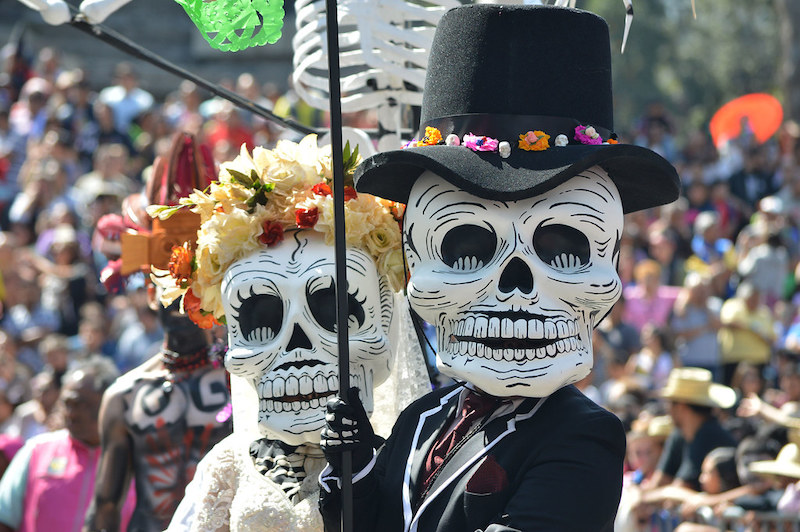

The Rich Culture of Mexico
There exists a vast and diverse array of culturse that reflects a rich history and traditions. This cultural fusion can be observed in the wide variety of languages, food, music, religious practices, festivities, and more.
It cannot be denied that Mexican culture draws upon various influences, both from the indigenous people native of Mesoamerica and from European roots, predominantly the Spanish. There are also influences from cultures such as those from Africa, Asia, and even the Middle East.
On this page, my goal is for you to fall in love with the immense number of opportunities to appreciate what this beautiful country has to offer.
Dia de muertos
The Day of the Dead is one of Mexico's most striking and significant traditions. While in many other countries death is often regarded as a taboo subject, or something to be avoided, Mexico, in contrast, celebrates this day (which takes place on November 1st and 2nd) to commemorate and honour our loved ones who have passed on to a better life.

Image source:
Source
During this festivity, the way it is celebrated varies depending on the region; however, the customary practice is to set up altars. People place photographs of their deceased loved ones on the altar, along with food, beverages, or objects that the departed once used or enjoyed eating or drinking.
In some states, such as Morelos, families open the doors of their homes to welcome those who were friends of the deceased. The hosts offer visitors beverages such as "atole" (which a traditional warm drink similar to hot chocolate) and a traditional bread called "pan de muerto".
This festivity has become very popular in recent years, thanks to Hollywood films, such as "Coco" (Remember Me) and "The Book of Life" that have brought this beautiful tradition to a wider audience.
info source: source

Image source: Source
Mariachi and the Influence of Music on the Daily Lives of Mexicans
Music has a strong influence on the daily lives of Mexicans, as it is present in many different types of performances. Mexicans cannot live without music or dance; it is one of the defining characteristics of Mexican culture.

Image source: Source
{kind=link}